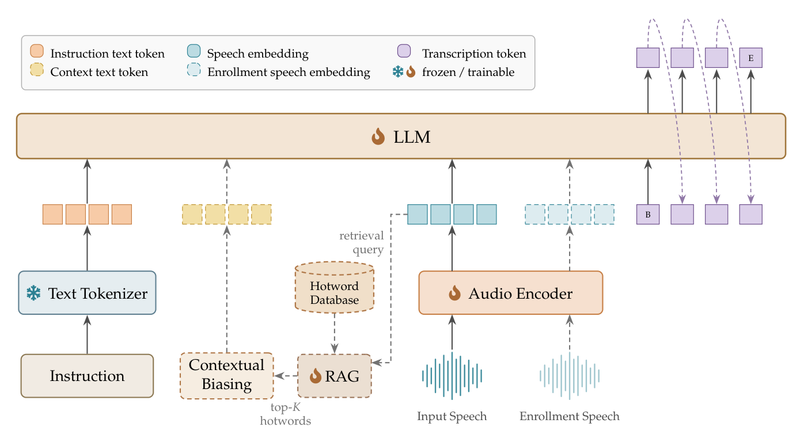

AmphionASR
AmphionASR
A Unified SpeechLLM for Context-Aware Speech Recognition
A Unified SpeechLLM for Context-Aware Speech Recognition
AmphionASR is a SpeechLLM that supports multiple conditioned recognition settings through a shared model and task-specific inputs. A 16 kHz waveform is encoded by the AuT encoder into the LLM's embedding space; the text branch tokenises the instruction and optional hotword lines. A parallel retrieval branch selects a top-K hotword subset from a large candidate vocabulary and inserts it into the prompt line before a single ASR forward pass.
AmphionASR unifies four recognition settings within one model, differing only in their instructions and optional reference inputs.
Transcribe the following audio.[Hotwords:...].{speech}
A fine-grained dual encoder retrieves a top-K subset from a large candidate vocabulary before decoding. The selected hotwords are inserted into the prompt line, biasing the decoder toward rare or domain-specific entities without any architectural change.
| Model | Transcript | Metric |
|---|---|---|
| — | ||
Given the speaker's voice:{enroll} Transcribe what this speaker says in the following audio.{speech}
Given a short enrollment utterance of a target speaker, the model transcribes only that speaker's content from overlapping speech, rather than concatenating all talkers. Both audio segments share the same AuT encoder path and reach the LLM as two ordered audio-embedding spans.
| Model | Transcript | Metric |
|---|---|---|
| — | ||
Transcribe the following audio.{speech}
Handles real-world capture conditions such as far-field pickup, additive noise, reverberation, obstruction, echo, recording coloration, electronic distortion, and transmission dropout. Evaluated on Voice-in-the-Wild-Bench (16 subsets, 5,000 clips); AmphionASR records the lowest WER on 8 of 16 degradation subsets.
| Model | Transcript | Metric |
|---|---|---|
| — | ||
Transcribe the following whispered audio.{speech}
Transcribes atypical, low-energy whispered phonation that deviates from normal speech. AmphionASR obtains the lowest error on both the Mandarin wEar (0.58% CER) and English WTIMIT (6.11% WER) whispered-speech tests.
| Model | Transcript | Metric |
|---|---|---|
| — | ||
An AuT audio encoder feeds frame embeddings directly into the LLM. At inference time, a hotword retriever selects a top-K subset from a large candidate vocabulary and inserts it into the prompt before decoding.

Qwen3-ASR 24-layer AuT encoder. Log-mel front-end (128 bins, 10ms hop), convolutional sub-sampler, Whisper-style pre-LN Transformer into 2048-d frame embeddings at 12.5 Hz.
Initialised from Qwen3-ASR-1.7B text backbone. 28-layer decoder-only Transformer, 2048-d hidden states, 64K native context length.
Two small MLP adapters mapping frozen AuT frame embeddings and frozen LLM token embeddings into a shared 512-d space. Max-over-time scoring selects top-K hotwords.
@misc{amphionasr2026,
title = {AmphionASR: A Unified SpeechLLM for Context-Aware Speech Recognition},
author = {{Amphion ASR Team}},
year = {2026},
note = {Technical report},
}